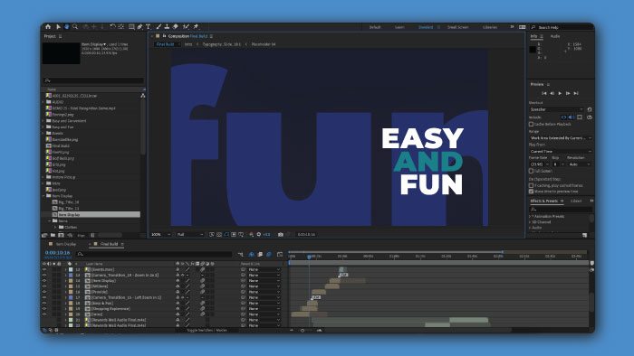

RewardTrax Technology Video
Why use motion?
We ultimately decided to use motion graphics for this project becuase we belived it would be the most enticing and engaging way to get potential clients excited about working with us for their incentive porgrams.
Process
My process for creating a video driven by motion graphics is very similar to how I'd go about producing a live action video.
The steps in this process are
- Conceptulizing
- Writing
- Storyboarding
- Recording
- Designing
- Animating
- Editting
Conceptulizing
At this step I am either looking at what seems to be missing from video marketing or how we can make something that's effective enough to generate engagement and hopefully leads.
Writing
Once I get an idea that is worthy of being made I work with copywriters to write out what's going to be said in the script along with brief descriptions of what will be shown. For motiion graphics I typically use a two column script as it's easier for timing and helpiing others visualize what will be going on in the early stages.
Storyboarding
At this poinit I start making rough sketched of how I want the graphics to be displayed, I include various notes on timiing and what how certain pieces will move inside of the frame.
Recording
I record the audio before I do any of the designs and animating so I can get an idea of the voice talnets timing and inflections so I can adjust the designs later.
Designing
Here I will design how the scenes will look at their climax, I do this now becasue it makes animating and timing everything out so much easier.
Animating
In this step I put the motion in motion design, I choose how imagery and designs will flow inbetween scenes, how evertyhting interacts with each other and so on.
Editting
Once I have everything built out and aniimated I bring it all together in After Effects, and make any final adjustments that need to be done. From here it's sent out for viewing and use for the clients.
Info
Video
RewardTrax Technology
Timeline
June 2020
TOOLS
- After Effects
- Premiere Pro
- Photoshop
- Illustrator
DISCIPLINES
- Motion Design
- Script Writing